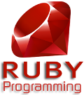
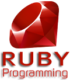

Bonjour!
Je m'appelle Guillaume Blanc de Lanaute et je suis actuellement en double diplôme à l'Université du Québec à Chicoutimi en Maîtrise en informatique (jeux vidéo) ainsi qu'à l'Institut supérieur de l'électronique et du numérique (cybersécurité). Passionné par l'univers de la programmation et des jeux vidéo, je suis à la recherche d'un stage de fin d'étude dans le développement de jeux vidéo (juillet 2021) pour mettre en application mes connaissances mais aussi pour en acquérir.
Mes compétences
(Technologies, moteurs de jeux et langages utilisés quotidiennement ou occasionnellement)


 



Mes projets (jeux vidéo)
(Retrouvez mes autres projets sur GitHub et GitLab)
- Responsable de l’implémentation de l’UI.
- Statistiques des personnages.
- Gestion de l’économie en jeu.
- Animation des barres de vie et des dégâts et soins flottants.
- Gestion de l’inventaire.
- Échanges avec les personnages marchands.
- Transition entre les salles et les scènes.
- Paramètres audio et graphiques.
- Gestion des menus.
- Drops des personnages.
- Cinématiques.
- Participation à l’implémentation de certains mécanismes de base.
- Gestion des niveaux de difficulté.